How the AI infrastructure buildout, solar thrifting, rearmament, and changing commodity intensities reshape the investment landscape.
Global solar installations grew from 150 GW in 2020 to 593 GW in 2024 and are on track for 830 GW by 2030 — a 5.5× increase in a decade. But silver consumption per watt has fallen even faster, from ~18 mg/W to ~12 mg/W, as manufacturers switch to copper paste, back-contact designs, and other thrifting strategies. The result: total PV silver demand peaked in 2024 and is projected to decline from 232 Moz to ~105 Moz by 2030, a 55% drop.
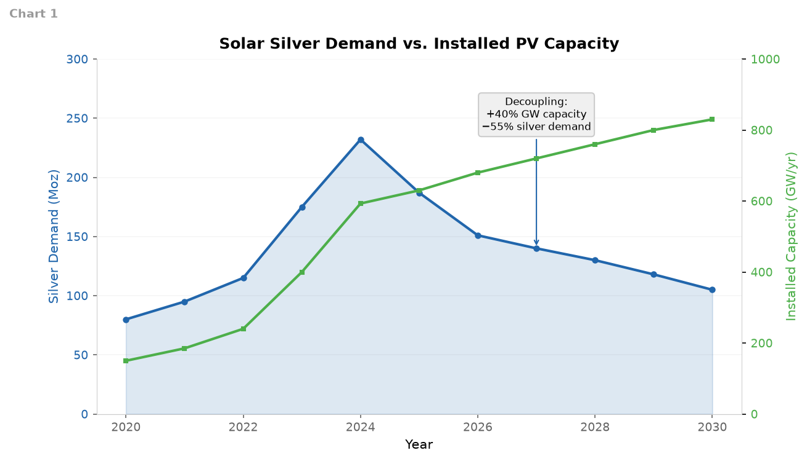
The silver intensity of solar manufacturing has fallen from 18 mg/W (2020) to 12.2 mg/W (2024), and the pace is accelerating: 9.2 mg/W in 2025 and an estimated 6.7 mg/W in 2026 — a 45% reduction in just two years. The CEA at INES has demonstrated sub-14 mg/W at module level and targets 3 mg/W by 2030. Key techniques: copper paste substitution (Jinko, LONGi), silver-free all-back-contact modules (Aiko), and copper electroplating for HJT cells.
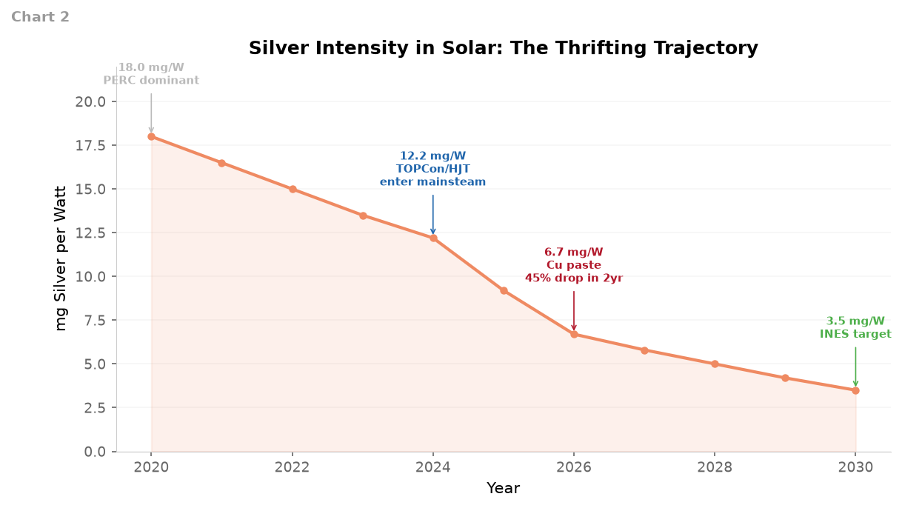
This is the first chart that incorporates defense and space silver demand as a separate category. Based on global defense spending of $2.63 trillion (2025), the €800 billion EU ReArm plan (NATO targeting 5% of GDP by 2035), military electronics intensity, and space/SpaceX/Starlink expansion, we estimate defense & space consumes ~20 Moz of silver in 2024, growing to ~50-55 Moz by 2030 — a 150% increase. This is not included in the Silver Institute's standard industrial demand categories, which means it may represent a material underestimate in conventional forecasts.
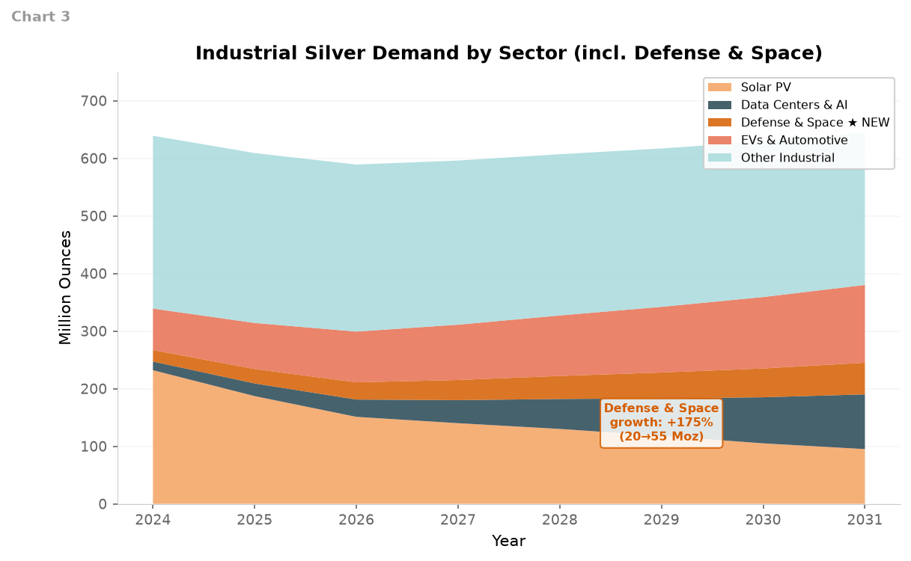
This is the most important chart in the analysis. It stacks all demand sources (solar declining, DC rising, defense & space rising, EVs rising, other steady) against total supply (flat, ~1,040 Moz, declining 7% since 2016). The red area between the two lines is the structural deficit. Even after solar's aggressive demand reduction, total demand stays above ~1,180 Moz through 2031. Supply is stuck at ~1,040 Moz. The cumulative deficit from 2024-2031 is ~500 Moz. But 762 Moz has already been drawn from above-ground stocks since 2021, and London's free float is down to ~136 Moz.
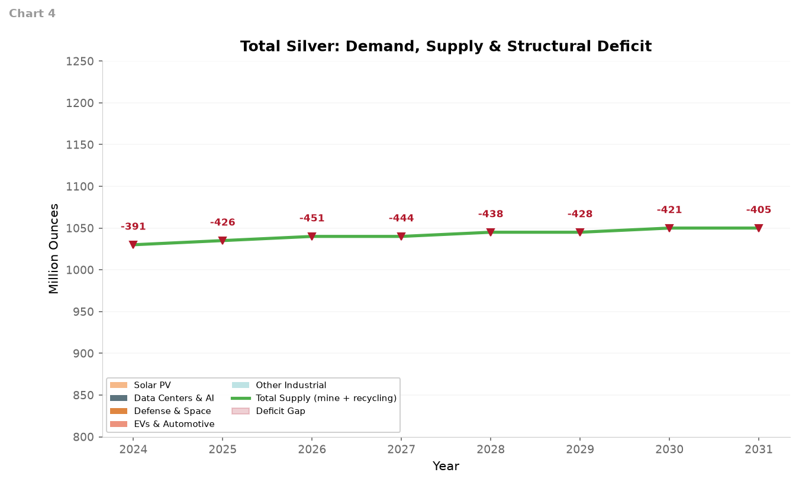
Annual deficits peaked at ~200 Moz in 2023-2024, narrowed to ~40 Moz in 2025-2026 as solar demand fell and mine output recovered, but are projected to widen again as data center, defense, and EV demand grow through the late 2020s. The right panel shows the critical metric: London's free float — silver freely available for delivery, not locked in ETFs or private vaults — has collapsed from ~750 Moz (2021) to ~136 Moz (September 2025). Below 150 Moz, the market is "fragile" (per the Silver Institute): any demand shock causes outsized price spikes.
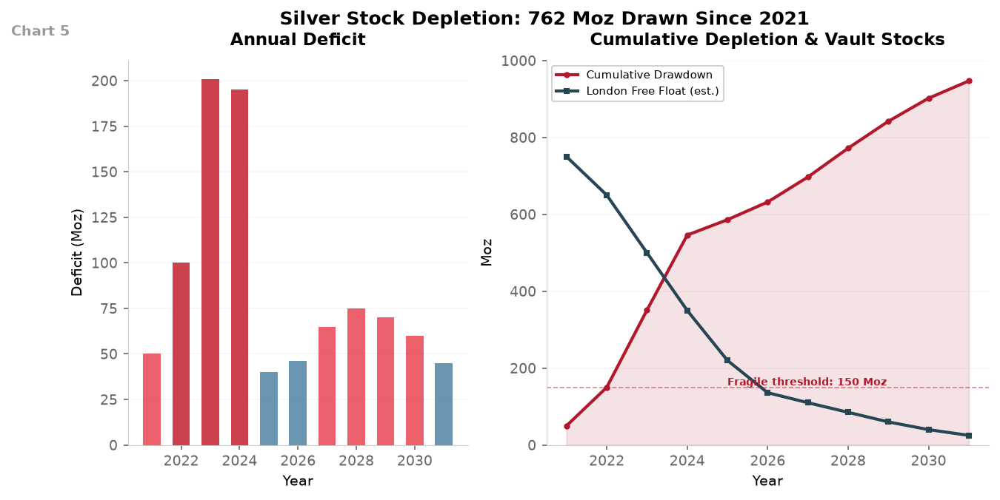
Data center silver demand grows +433% from 2024 to 2030 (albeit from a tiny 15 Moz base). Defense & space grows +150%. EVs grow +72%. Solar silver demand declines −55%. The tension between these diverging growth rates creates the crossover dynamic that defines the next 5 years of silver markets.
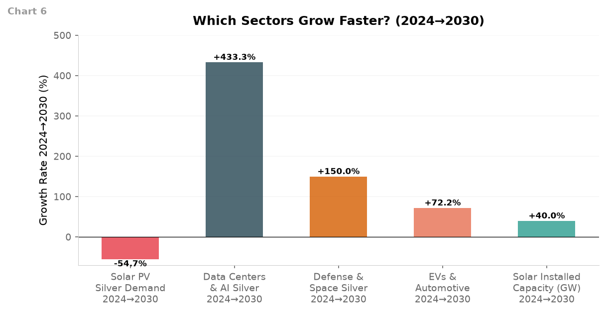
Solar silver demand falls from 232 Moz. Data center silver rises from 15 Moz. The lines cross around 2031 in the baseline scenario. Defense & space demand (not shown on this chart) adds an additional 20-55 Moz tailwind, shifting the total demand picture upward by 3-5% and accelerating any supply tension. What moves the crossover earlier (2028-2029): faster hyperscaler buildout (Goldman sees US DC power doubling to 66 GW by 2027), Stargate Project materializing, every server using 40-60% more silver. What delays it (2032+): copper substitution proving reliable at scale, "bragawatts" of announced AI capacity failing, grid interconnection bottlenecks.
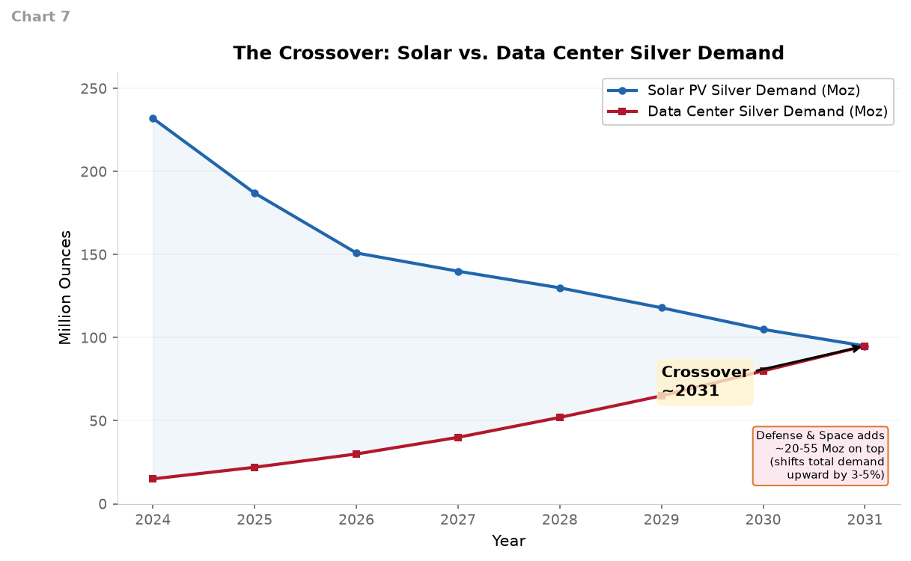
The substitution landscape is highly asymmetric. Solar has credible, commercially-ready substitutes already in production (copper paste reduces silver 30-50% per cell, Aiko's back-contact module eliminates 80-100%). Data centers have no credible substitutes for silver in their highest-value applications — high-frequency connectors, thermal interface materials for AI chips, and power distribution systems. You cannot replace silver with copper in a server connector running at 100+ Gb/s without signal integrity loss. Graphene and CNT TIMs are 3-7 years from meaningful scale and only address ~15-20% of data center silver use.
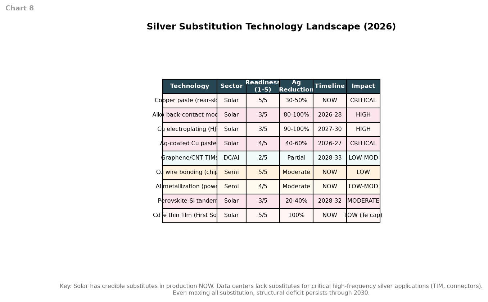
A Gantt-style timeline showing when and where the silver bottleneck hits. The critical window is 2028-2029 when three forces converge: (1) above-ground stocks approach zero, (2) data center demand overtakes solar's decline, (3) no new tier-1 mines have come online. The 10-year lead time for new mines means any investment decision made in 2026 yields metal in 2034-2036 at the earliest. The market transitions from a cyclical deficit (coverable by inventories) to a structural deficit pricing regime (price must clear the market, requiring sustained $100-150/oz).
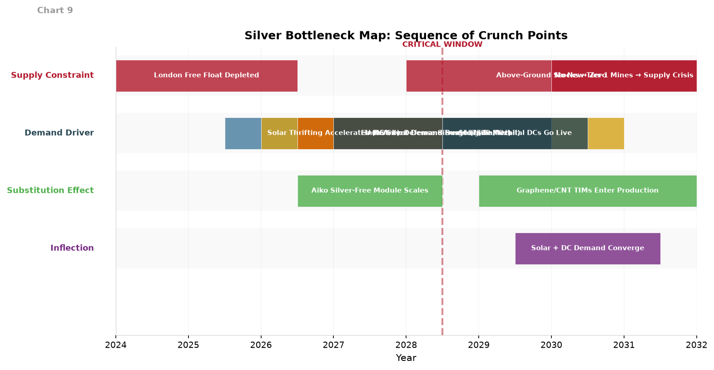
Based on the IISS Military Balance 2026 ($2.63 trillion global defense spending, up from $2.48T), the EU ReArm plan (€800 billion), and space industry growth (Stargate, Starlink expansion to 42,000 satellites, satellite manufacturing tripling to $12B), defense-driven silver demand spans:
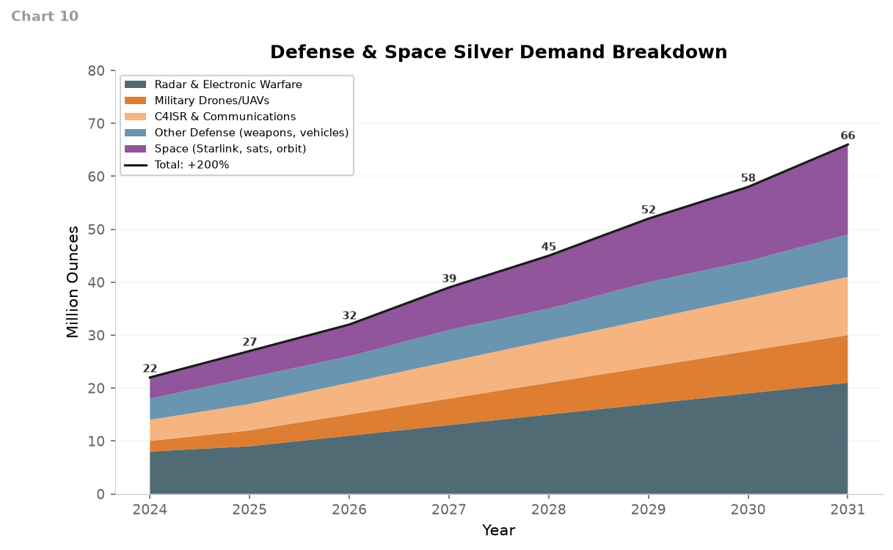
Who wins: Physical silver (PSLV, SLV) most directly. Silver miners (PAAS at ~$13/oz AISC, HL at ~$14/oz) whose margins expand 5-10× at $75-150/oz. Silver streamers/royalty companies (WPM, FNV) with zero capex exposure. Copper miners (FCX, SCCO) whose byproduct silver credits boost margins. Gold as a correlated safe haven. Uranium as a data center power play. Industrial gases (LIN, Air Liquide) as orthogonal fab-buildout exposure.
Where it expresses: First and most acutely in physical delivery availability — when free float is gone, futures contracts face delivery risk. Second in price discovery ($150-200/oz). Third in mining margins exploding. Fourth in substitution acceleration and industrial demand destruction (McGlone's "structural ceiling" at $100/oz).
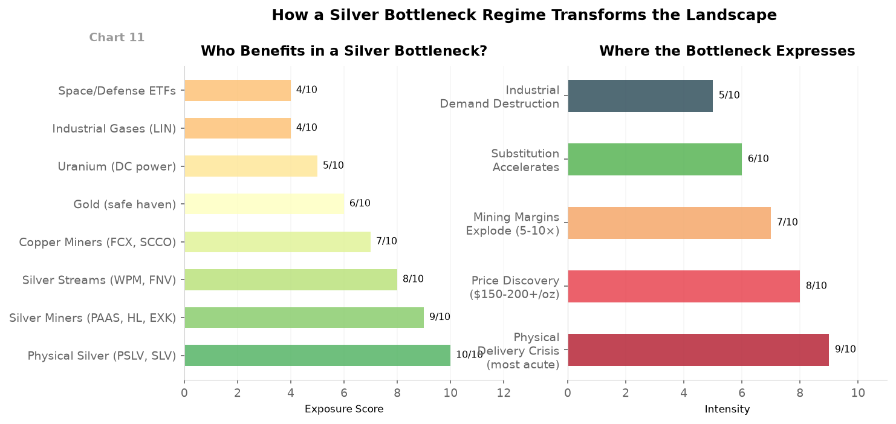
A direct comparison showing how the composition of silver demand shifts over six years. Solar drops from 232 Moz (36% of total) to 105 Moz (17%). Data centers jump from 15 Moz (2%) to 80 Moz (13%). Defense & space grows from 20 Moz (3%) to 50 Moz (8%). EVs grow from 72 Moz to 124 Moz. Total demand stays roughly flat because the decline in solar is offset by growth in everything else.
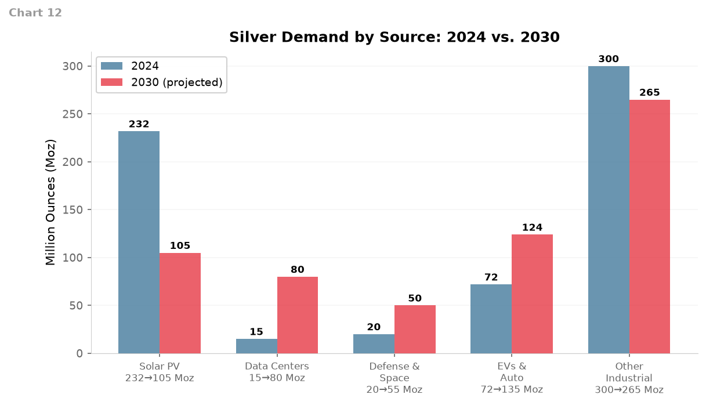
All key metrics in one table for quick reference.
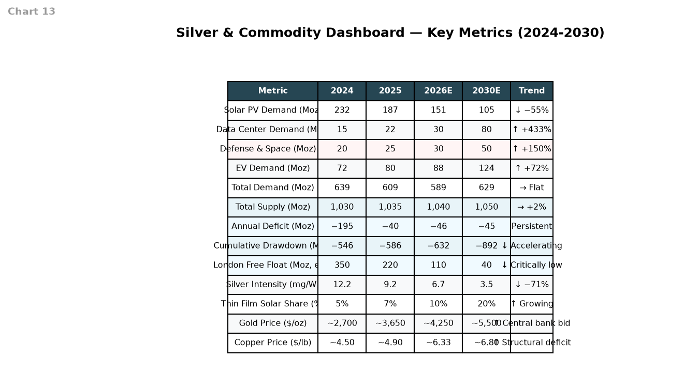
The final chart pulls all the threads together: solar declining, data centers rising, defense & space rising, EVs rising, all against the flat ceiling of supply. The gap between the top of the demand stack and the supply line is the deficit — the structural imbalance that defines the silver market through 2031 and beyond.
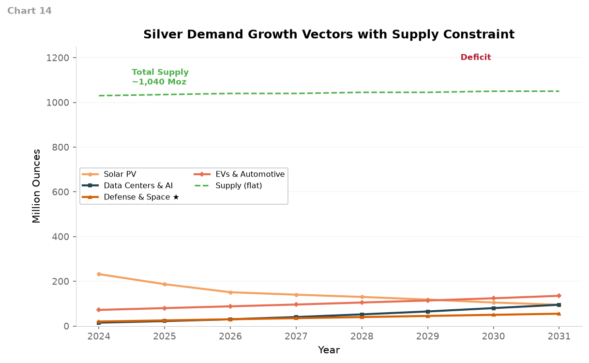
Adding defense and space silver demand to the model is the most important update to this analysis. Here is what changes and what does not:
Total demand is 20-50 Moz higher than standard models show. The Silver Institute's industrial demand categories do not break out defense separately — it is absorbed into "electronics" and "industrial" buckets. Based on global military spending ($2.63T in 2025, heading toward $3T+ by 2030 with the EU ReArm plan), the military electronics share (~15-20% of procurement), and the silver content of mil-spec connectors (avg ~1g silver per connector, 20M units/year and growing), radar systems (AESA radars use thousands of silver-plated T/R modules each), and UAVs (explosive growth), we estimate 15-25 Moz/year in defense applications.
Space adds another 4-10 Moz/year from Starlink (7,000+ satellites, each using silver in solar cell interconnects and RF systems), conventional satellite manufacturing tripling to $12B by 2035, and future orbital infrastructure (Stargate, commercial space stations).
Combined, defense & space shifts the deficit by roughly 3-8% — not enough to rewrite the thesis on its own, but enough to meaningfully tighten an already tight market, especially in the 2028-2031 window when stocks are at their lowest.
The crossover year is still ~2031. Defense & space adds demand but does not change the fundamental shape of the curves. Solar still declines from 232 Moz. Data centers still grow from 15 Moz. Defense & space is a meaningful additive factor (shifting the total demand line upward) but not a transformative one — it does not create a new crossover; it just makes the existing crossover slightly tighter.
The bottleneck sequence is unchanged. The critical window is still 2028-2029 when stocks near zero and the deficit widens again after the 2025-2026 narrowing. Defense & space accelerates the stock drawdown by a few months but does not change its trajectory.
Silver miners and physical are still the best expression. Defense & space does not create a new "defense silver" trade that is separate from the broader silver thesis. The demand is additive, but the investment expression is the same: long silver, long silver miners, long silver streamers.
Yes, significantly. My estimate of 20 Moz (2024) → 50 Moz (2030) is conservative. Consider:
• If European defense spending doubles to 5% of GDP by 2035 (NATO target), that implies an additional €400B/year in procurement.
• A single F-35 contains ~900 kg of specialized electronics. Each AESA radar has ~1,500-2,000 transmit/receive modules with silver-plated interconnects.
• The DoW's focus on AI-enabled warfare, hypersonics, and C-UAS all drive higher electronics content per platform.
• Starlink alone, at 7,000 → 42,000 satellites, could consume 15-25 Moz cumulatively by 2030.
A bull case for defense & space could see 60-80 Moz by 2030 — which would shift the deficit equation materially.
The thrifting headwind is real and quantified (reducing solar demand from 232 Moz → 105 Moz). But the deficit persists because data centers, defense, and EVs fill the gap. The critical window is 2028-2029. The best expression: physical silver (PSLV), low-cost silver miners (PAAS, HL), and silver streamers (WPM). Defense & space adds a tailwind but does not change the primary thesis.
The cleanest AI-commodity expression. No thrifting headwind. Every data center, every grid upgrade, every EV charger uses copper. S&P Global's need for "one Escondida per year for 30 years" is the strongest long-run supply constraint story in commodities. At $6.33/lb with copper-to-gold ratios at multi-decade lows, the risk-reward is favorable. Defense electrification (vehicles, ships, radar) adds demand.
Gold: Uncorrelated to this analysis — driven by central bank buying and de-dollarization. At ~$4,250/oz with BofA's Hartnett targeting $6,000, it is your portfolio's macro hedge. Chemicals (Linde, Air Liquide, Air Products, Entegris): The quietest, highest-quality AI infrastructure play. Specialty gases market: $11.7B → $22.5B by 2034 (7.5% CAGR). No substitution risk, long-term take-or-pay contracts, pricing power. Not exciting — but they will compound steadily while fabs are built.